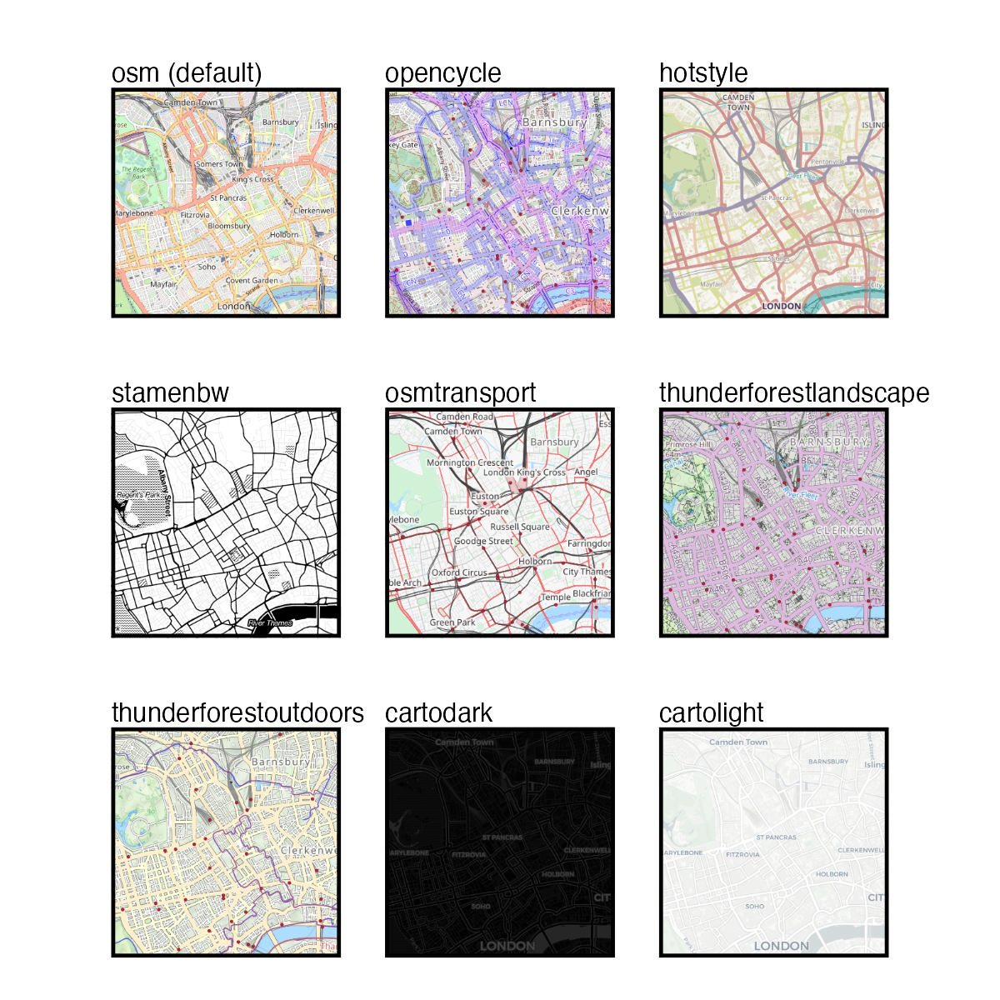

This chapter explores techniques for mapping crime patterns using R. You’ll learn how to visualize where crimes are concentrated by transitioning from simple point maps to density maps. Key concepts include kernel density estimation (KDE), working with spatial data layers, and using colour schemes to enhance map clarity. The chapter also addresses practical challenges, such as managing data distortion in projected coordinate systems and clipping map layers to relevant boundaries. By the end, you’ll be able to create informative, visually appealing maps that reveal meaningful patterns in crime data, laying the groundwork for more-advanced mapping techniques later in the course.
Before you start
Open RStudio or – if you already have RStudio open – click Session then Restart R. Make sure you’re working inside the Crime Mapping RStudio project you created in Section 1.4.2, then you’re ready to start mapping.
6.1 Introduction
In Chapter 4, we created a map showing bike thefts in the City of Vancouver. But it was hard to see the patterns of theft on this map because too many of the points representing theft locations overlapped. In fact, dot maps are almost never a good way to show patterns of crime. A better way to show where crime is concentrated on a map is to work out the density of crime in each area and then map that density. In this chapter we will learn how to estimate crime density and show it on a map.
Create a new R script file and save it as chapter_06.R, then add this code from Chapter 4:
chapter_06.R
# Load packagespacman::p_load(ggspatial, sf, sfhotspot, tidyverse)# Load and wrangle bike theft databike_thefts <-read_csv("https://mpjashby.github.io/crimemappingdata/vancouver_thefts.csv.gz") |> janitor::clean_names() |>st_as_sf(coords =c("x", "y"), crs ="EPSG:32610") |>filter(type =="Theft of Bicycle")
Run this code. To do that, highlight all the lines of code and then either:
click the Run button at the top of the R script panel, or
press Ctrl+Enter (Windows) or Command+Return (Mac) on your keyboard.
6.2 Mapping crime density
When we speak about the density of crime, we mean the relative concentration of points in each part of the area we are studying, i.e. how many points (representing bike thefts) are there in each part of the map relative to all the other areas of the map.
To estimate the density of points in different areas of the map, R uses a technique called kernel density estimation (KDE). To do this, R must:
divide the map into a grid of cells, each the same size,
count the number of points in each cell,
for each cell, count the number of points in nearby cells, but give less weight to (i.e. systematically undercount) those cells that are further away,
for each cell, total up the count of points in that cell and the (weighted) count of points in nearby cells – this is the estimate of the density of points in that cell.
This procedure has the effect of producing a smooth surface representing crime density.
There are several ways we can make density maps in R. In this course we will use the sfhotspot package because it makes reasonable default decisions about how density maps should look, while still giving us control over their appearance if we want it. sfhotspot also has other useful functions that we will use in future chapters.
To create a density map using sfhotspot, we first use the hotspot_kde() function to convert a dataset of offence locations to an estimate of the density of offences for each cell in a grid. hotspot_kde() automatically chooses how big the cells in the grid should be (but we can set this ourselves if we want to).
Add this code to the script file for this chapter and then run that line of code:
chapter_06.R
# Estimate density of bike theftsbike_theft_density <-hotspot_kde( bike_thefts, bandwidth_adjust =0.5, quiet =TRUE)
Why did we specify quiet = TRUE?
The quiet = TRUE argument to the hotspot_*() family of functions (including hotspot_kde()) stops the function from producing progress messages as we go along. If you experience any problems using the hotspot_kde() function, the best place to start in working out what has happened is to run the code again with the quiet = TRUE argument removed.
As usual, we can use the head() function to check what the resulting object looks like:
The bike_theft_density object created by hotspot_kde() contains three columns: n contains the count of bike thefts in each cell, kde contains the estimate of the density of thefts in each cell, and geometry contains the outline of each grid cell.
Since hotspot_kde() produces an SF object, we can add it to a map using the geom_sf() function. We can also use the fill aesthetic to specify that the fill colour of each grid cell should be determined based on the values of the kde column in the bike_theft_density object.
R Console
ggplot() +geom_sf(aes(fill = kde), data = bike_theft_density, colour =NA)
We have already seen that we can set aesthetics such as colour and shape manually, but the aes() function allows us to specify that the values of different aesthetics should be controlled by columns in the data. The aes() function takes as its arguments pairs of values (combined with an = symbol) where the first value is an aesthetic and the second value is the name of a column in the data. For example, to use the colour of points on a map to represent different types of crime that were stored in a column in the data called type, we could use aes(colour = type). In the map above, we use aes(fill = kde) to specify that the fill colour of the grid cells on the map should be controlled by the kde column in the data. This is called mapping a column to an aesthetic.
When to specify values inside or outside aes()
When should you specify the values of aesthetics inside aes() and when should you do it outside aes()?
If you want an aesthetic to have a constant value for all the points, lines or other shapes in a layer, control the aesthetic outsideaes(). For example, you could use geom_sf(bike_thefts, colour = "mediumblue") to make all the shapes in that layer blue.
If you want to vary the appearance of shapes according to values in the data, you should control the aesthetic insideaes(). For example, you could use geom_sf(aes(colour = month), bike_thefts) to vary the colour of shapes in a layer according to values of the month column in the data.
If you specify a constant value for an aesthetic (e.g. colour = "mediumblue") this will over-ride any mapping for that aesthetic provided by the aes() function (e.g. aes(colour = month)). If you have used aes() to specify that an aesthetic should be controlled based on a column in the data but find that the aesthetic is not changing based on the data, check you have not also specified a constant value for that aesthetic.
aes() must be the first argument in the geom_*() function.
In this map, instead of seeing each crime as a separate point, we see the density of crime as the filled colour of cells in a grid. By comparing this density map to the point map we produced before, we can see that the density map makes the areas with the highest frequency of thefts slightly easier to identify (although we will improve it much further below).
You can also see that our map now has a legend, showing that higher densities of bike thefts are shown on the map in light blue and lower densities are shown in dark blue. The exact values shown in the legend are not particularly meaningful, so we can ignore these for now.
Density mapping
What is a key advantage of using KDE over dot maps for crime data?
Which R function is used to create a density layer from point data?
Which argument in geom_sf() is used to specify that the fill colour of grid cells should be determined by the KDE values?
What does the st_transform() function do in spatial data operations?
6.2.1 Fine-tuning cell size and bandwidth
We can control the appearance of KDE maps in several ways. For example, we can vary the number of cells in the grid and the definition of what cells the kernel density estimation process should consider to be ‘nearby’ for the purposes of calculating weighted counts. Cells are considered to be ‘nearby’ to a particular cell if they are closer to that cell than a distance known as the KDE bandwidth.
By default, hotspot_kde() chooses the cell size and the bandwidth automatically. The maps below show how changing these defaults changes the appearance of our map (with the legend and axes removed to make the small maps clearer).
By looking at the maps on the right-hand side, you can see that reducing the number of grid cells leads to a map that looks blocky and lacks information. Looking at the maps towards the top of the figure above, you can see that increasing the bandwidth relative to the default makes the density surface smoother. The smoother the surface, the less detail we can see about where crime is most concentrated, until on the top row we can see almost no information at all. On the other hand, if we reduce the bandwidth too much (the bottom row of maps) then almost no ‘nearby’ cells are included in the count and so it becomes more difficult to identify patterns.
In most cases, you will not need to change the cell size used in calculating the density of points on a map, but if you do then you can do this using the cell_size argument to hotspot_kde(). A cell size of about 200 metres is often a good choice for maps showing a whole city, such as our map of Vancouver.
Although you can set the bandwidth manually using the bandwidth argument to hotspot_kde(), you will almost never want to do this. Instead, you can vary the bandwidth relative to the automatically chosen default bandwidth by using the bandwidth_adjust argument. For example, if you wanted to see more detail in your map by using a smaller bandwidth, you could use bandwidth_adjust = 0.75 or bandwidth_adjust = 3/4 to set the bandwidth to be three-quarters of the default bandwidth.
Start with bandwidth_adjust = 0.5
I recommend using a slightly smaller bandwidth than the default, so that your maps show a bit more detail. Try setting bandwidth_adjust = 0.5 whenever you produce a density layer using hotspot_kde(), but remember to look at the map to see if you are happy with the result. If you are not happy, try varying the value of bandwidth_adjust. It is possible to set a value greater than 1, but it is very unlikely that this would produce the most-informative possible map.
6.2.2 Using colour to show density
The final way we can control the appearance of our density layer is to change the colour scheme used to represent density. To do this, we can use another type of function from the ggplot2 package: scales. Functions in the scale_*() family of functions allow us to control how the mapping between a column in the data and an aesthetic (colour, size, etc.) is represented visually. For example, which colour scheme is used to represent the density of thefts on our map.
There are many scale_*() functions, but the scale_fill_distiller() function produces several different colour scales that are specifically designed to be effective on maps.
Colour schemes can be divided into three types:
sequential colour schemes are useful for showing values from low to high,
diverging colour schemes are useful for showing values relative to a meaningful central point, and
qualitative colour schemes are useful for showing separate categories that can appear in any order and still be meaningful.
In crime mapping we’re usually interested in showing how crime varies from low to high, so we need to use a sequential colour palette. There are 18 sequential colour schemes (or palettes) available in scales_fill_distiller(), each with a name:
Choosing the right type of colour scale
It is important to only use the right type of colour scale in the right circumstances, since using the wrong type of scale could end up misleading people reading your map. For example, a diverging colour scale gives the strong impression that the central point in the scale is meaningful.
In some circumstances this might be useful, for example if you wanted to show areas in which crime had increased in shades of one colour and areas in which crime had decreased in shades of another colour. In that case, a diverging scale would be appropriate because the central point represents something meaningful: no change in crime. If the central point is not meaningful, use a sequential colour scheme instead.
If you want to represent a categorical variable, you should use a categorical colour scale unless the categories have a natural order. For example, if you wanted to show ethnic groups on a map you would use a categorical colour scale, since there is no one order of ethnic groups that is any more meaningful than any other. If you wanted to represent days of the week with colour, then you might want to use a sequential colour scheme since the days of the week have a meaningful order.
By default, scale_fill_distiller() sets the lowest values to have the darkest colour. This often does not work well, but we can change this by setting the argument direction = 1. I recommend doing this in all cases.
You can think of all the functions that we can add to ggplot() as being like a stack of pancakes, with each new function being placed on the top of the stack. To change the colour of our map, we just add scale_fill_distiller() to the existing stack. Add this code to the script file chapter_06.R in RStudio:
chapter_06.R
# Plot density mapggplot() +geom_sf(aes(fill = kde), data = bike_theft_density, colour =NA) +scale_fill_distiller(palette ="Oranges", direction =1)
You can find out much more about how colours work in R by reading Working with colours in R and find many different colour palettes you can use with ggplot2 at the Color Palette Finder.
Making density maps
What R package do we use to make density maps using the hotspot_kde() function?
What is the bandwidth_adjust argument of the function hotspot_kde() used for?
In what circumstances is it appropriate to use a diverging colour scale, e.g. one that goes from blue to white to red?
Why is it a bad idea to use a diverging colour scheme for crime density maps?
6.3 Clipping map layers
There is one limitation of the KDE layer on our map that we need to deal with. The area covered by the KDE layer is determined by the area covered by the point data that we provided to hotspot_kde(). More specifically, hotspot_kde() will calculate density values for every cell in the convex hull around the point data, i.e. for the smallest polygon that contains all the points in the data.
This can be a problem in some circumstances, because we do not necessarily have crime data for all the areas within the convex hull of the data, even though KDE values will be calculated for those areas. This could be misleading, since it will look like such areas have low crime density, when in fact we do not know what the density of crime in such areas is.
Fortunately, we can easily deal with this problem by clipping the KDE layer to the boundary of the area for which we have crime data. This means we will only show densities for cells for which we actually have data.
A. We only have data on bike thefts from the City of Vancouver, so all the bike thefts in the data necessarily occurred within the city. We do not know what the density of crime outside the city is.
B. The KDE function only knows the theft locations, not the area in which thefts could have occurred. So the convex hull created by the KDE layer will not necessarily match the area of the data.
C. In this case, that means some areas (shaded) will be included in the KDE layer even though they happened outside the area covered by the data, which could be misleading.
D. To avoid suggesting we know the density of crimes in areas for which we do not have data, we should clip the KDE layer to the boundary of the area for which we have data.
To clip the KDE layer to the boundary of the area for which we have data, we need a new dataset that contains the boundary of the City of Vancouver. Fortunately this dataset is available online in a spatial format known as a GeoJSON file. GeoJSON is a spatial file format, so we can load it in R using the read_sf() function from the sf package.
Rather than add the code needed to load this dataset to the end of our script file, it will be neater to add it to the point in the file where we load the other data. That way, if we come back to the file later, all the code that loads datasets will be in one place and it will be easy to see what data is loaded by that script. Add this code to the chapter_06.R file, after the pipeline that loads and wrangles the bike-theft data and before code that creates the bike_theft_density object.
chapter_06.R
# Load Vancouver neighbourhood boundariesvancouver_nbhds <-read_sf("https://mpjashby.github.io/crimemappingdata/vancouver_neighbourhoods.geojson") |>st_transform("EPSG:32610")
You might have noticed that as well as loading the boundary data with read_sf(), we have transformed the data to use the same co-ordinate system (EPSG:32610) as is used for the bike_thefts object. This is because we can only clip datasets that use the same co-ordinate system.
Before we clip the density layer to the city boundary, check that your file chapter_06.R looks like this:
chapter_06.R
# Load packagespacman::p_load(sf, sfhotspot, tidyverse)# Load and wrangle bike theft databike_thefts <-read_csv("https://mpjashby.github.io/crimemappingdata/vancouver_thefts.csv.gz") |> janitor::clean_names() |>st_as_sf(coords =c("x", "y"), crs ="EPSG:32610") |>filter(type =="Theft of Bicycle")# Load Vancouver neighbourhood boundariesvancouver_nbhds <-read_sf("https://mpjashby.github.io/crimemappingdata/vancouver_neighbourhoods.geojson") |>st_transform("EPSG:32610")# Estimate density of bike theftsbike_theft_density <-hotspot_kde( bike_thefts, bandwidth_adjust =0.5, quiet =TRUE)# Plot density mapggplot() +geom_sf(aes(fill = kde), data = bike_theft_density, colour =NA) +scale_fill_distiller(palette ="Oranges", direction =1)
We can clip the KDE layer produced by hotspot_kde() to the boundary of the City of Vancouver using the st_intersection() function from the sf package. st_intersection() removes any rows from the dataset provided as the first argument that do not fall within the area covered by the dataset provided as the second argument. We can use st_intersection() to remove any cells in bike_theft_density that are outside the city outline stored in vancouver_nbhds.
We will now add the code needed to clip the KDE layer to the city boundary to the chapter_06.R script file. Since we do not need the unclipped version of the KDE layer, we don’t need to separately estimate the density and clip the result. Instead, we can combine the call to st_intersection() with the existing call to hotspot_kde() to form a pipeline using the pipe (|>) operator. To do that, in the chapter_06.R file replace the line that creates the bike_theft_density object with this code:
chapter_06.R
# Estimate density of bike thefts and clip resultbike_theft_density_clip <- bike_thefts |>hotspot_kde(bandwidth_adjust =0.5, quiet =TRUE) |>st_intersection(vancouver_nbhds)
Warning: attribute variables are assumed to be spatially constant throughout
all geometries
We can read this code as saying:
take the bike_thefts object, … use it to estimate the density of thefts … and then clip the resulting density object to the boundary stored in the vancouver_nbhds object.
If you aren’t comfortable with how the pipe operator works, you might want to refer back to Section 3.9.
st_intersection() requires both objects to use the same co-ordinate system
The st_intersection() function requires that both spatial layers have the same co-ordinate system. If the two layers use different co-ordinate systems, you will need to transform one of the layers using st_transform() so that it uses the same co-ordinate system as the other layer.
If you do not know which co-ordinate systems the layers use, you can use the st_crs() function to extract the co-ordinate system from one layer and pass that value as the second argument to st_transform(). For example:
Warning message: attribute values are assumed to be spatially constant
st_intersection() produces a warning message:
Warning: attribute variables are assumed to be spatially
constant throughout all geometries
As long as you are simply using st_intersection() to remove parts of the data outside a boundary, you can ignore this message.
We can quickly check the effect of clipping the density layer to the city boundary by producing a very basic map that shows both layers in separate colours. Run this code in the R Console:
R Console
ggplot() +geom_sf(data = bike_theft_density, fill ="blue") +geom_sf(data = bike_theft_density_clip, fill ="green") +geom_sf(data = vancouver_nbhds, colour ="black", fill =NA, linewidth =1)
From this map, we can see that while the bike_theft_density object (shown in blue) contains cells outside the black city boundary, the bike_theft_density_clip object (shown in green) contains only cells inside the boundary.
Quiz
What is the purpose of the st_intersection() function in spatial data manipulation?
Why is it important to clip a KDE layer to a relevant boundary in crime mapping?
6.4 Adding a base map
The density map we have made is much more effective than a point map at allowing us to identify where the highest number of bike thefts in Vancouver occur. However, it’s still quite difficult to know where those places are, because we cannot easily work out where in the city these places are. We can make this much easier by adding a base map underneath the density layer.
We can add a base map using annotation_map_tile() function from the ggspatial package. We can add annotation_map_tile() to a ggplot() stack in the same way that we would add geom_*() functions. Since we want the base map to appear under the density layer, we add the base map layer to the ggplot() stack first. So that we can see the base map underneath the density layer, we will also make the density layer semi-transparent using the alpha argument to geom_sf().
Replace the existing ggplot() stack in the chapter_06.R file with this code and then run it:
chapter_06.R
ggplot() +annotation_map_tile(zoomin =0, progress ="none") +geom_sf(aes(fill = kde), data = bike_theft_density_clip, alpha =0.67, colour =NA ) +scale_fill_distiller(palette ="Purples", direction =1)
The base maps returned by annotation_map_tile() are available at many different zoom levels, from level 1 that is useful for mapping the whole world in one map, to level 20 that can be used to map a single building. By default, annotation_map_tile() downloads tiles with slightly less detail than we might want, but we can fix this by using the argument zoomin = 0. We could also set a specific zoom level using the zoom argument.
For example, these maps show the same area around the UCL Jill Dando Institute with base maps at different zoom levels.
Choosing the right zoom level is a matter of balancing the level of detail in the map and the clarity of the image. In the maps above, zoom levels less than 12 tend to have pixelated images because they do not contain enough detail, while zoom levels greater than 12 contain too much detail and so the information is hard to read. But if this map covered a smaller or larger area, a different zoom level might be better. In general, setting zoomin = 0 and not setting any value for the zoom argument – so that annotation_map_tile() chooses the zoom level automatically – will produce an acceptable map.
annotation_map_tile() also gives us access to several different types of base map. The default style (seen in the maps above) is called ‘osm’ because it is the default style used by Open Street Map, the organisation that provides the map data. We can specify which style of base map we want using the type argument to annotation_map_tile().

You may want to experiment with different base map styles by using the type argument to annotation_map_tile(), e.g. using annotation_map_tile(type = "cartolight", zoomin = 0, progress = "none").
One final note about the annotation_map_tile() function: you might have noticed that when we have used it above we have always set the argument progress = "none". This stops the function from printing a progress bar while it is downloading the map tiles. The progress bar can sometimes be useful, but when you include the output from an R function in a report (as you will learn to do in Chapter 14), the output from the progress bar is likely to interfere with the formatting of the report. To prevent that, we use the progress = "none" argument.
Base maps
What is the purpose of adding a base map to a crime map in R?
Which R package is commonly used for adding base maps to crime maps?
Why might you need to be careful in choosing the right base map when creating a crime map?
6.5 Adding more layers
Adding a base map underneath our density layer makes it easier to understand where in Vancouver the highest densities of bike theft are. But our map could make it easier still to see where clusters of thefts occur. We could, for example, add the names of different neighbourhoods in the city, and show the city limits so that we can tell which areas have no crime because crimes in those areas are not included in our data.
In an earlier section I suggested we can think of ggplot charts, including maps, as being like stacks of pancakes – each function we use to amend the appearance of our chart is added to the top of the stack. So to add another layer to our map, we just add another geom_ function to our plot.
At the same time, we can also add labels to the plot at the centre of each neighbourhood using the geom_sf_label() function. geom_sf_label() works like geom_sf() in that it adds a spatial dataset to a map, but instead of adding the points, lines or polygons themselves, geom_sf_label() instead adds labels for those features.
We use the aes() function to specify which column in the vancouver_nbhds dataset we want to use for the label text. If we used head(vancouver_nbhds) to look at the columns in the data, we would see the neighbourhood names are contained in the column called name. Normally, we would use the code aes(label = name) to do this because the label aesthetic is used to set the label text. But in this case we also want to wrap the labels so that they don’t overlap adjacent neighbourhoods. To do this we can use the str_wrap() from the stringr package (part of the tidyverse), so that instead our call to the aes() function becomes aes(label = str_wrap(name, width = 10)).
To see how geom_sf_label() works, let’s create a quick map in the R Console. Paste the following code into the Console and run it:
Now let’s add these labels to the map in our script file. At the same time we will change the style of the labels so that they look better on the map. Do do this, we will add several more arguments to geom_sf_label():
alpha = 0.5 to make the label background semi-transparent so that we can see the density layer underneath it,
colour = "seagreen3" to slightly reduce the prominence of the label text to avoid distracting attention from the density layer,
lineheight = 1 to reduce the gap between lines in each label,
size = 2.5 to slightly reduce the size of the label text,
label.size = NA to remove the default border around the label background.
Replace the existing ggplot() stack in the chapter_06.R file with this stack and then run that code:
chapter_06.R
# Plot density mapggplot() +# Add base mapannotation_map_tile(type ="cartolight", zoomin =0, progress ="none") +# Add density layergeom_sf(aes(fill = kde), data = bike_theft_density_clip, alpha =0.75, colour =NA ) +# Add neighbourhood boundariesgeom_sf(data = vancouver_nbhds, colour ="seagreen3", fill =NA) +# Add neighbourhood namesgeom_sf_label(aes(label =str_wrap(name, 10)), data = vancouver_nbhds, alpha =0.5,colour ="seagreen", lineheight =1, size =2.5,label.size =NA ) +# Set the colour scalescale_fill_distiller(direction =1)
From this map, we can see that bike theft in Vancouver is heavily concentrated in a handful of neighbourhoods, particularly the Downtown and West End neighbourhoods. This map is much more useful than the first map that we produced in Chapter 4 showing only the point location of each crime, since in this latest map we can see not only the greatest concentrations of bike thefts but how they relate to the different areas of the city.
6.6 In summary
In this chapter we have learned to produce a density map of crime. This type of map can be very useful in identifying where practitioners should focus efforts to respond to crime. For example, a map like this might help local police to decide where to send officers to carry out extra patrols, while a crime-prevention charity might decide to run events in particular areas to educate people on how best to protect their bikes.
Now that we have learned all the code for this chapter, your code file should look like this:
chapter_06.R
# Load packagespacman::p_load(sf, sfhotspot, tidyverse)# Load and wrangle bike theft databike_thefts <-read_csv("https://mpjashby.github.io/crimemappingdata/vancouver_thefts.csv.gz") |> janitor::clean_names() |>st_as_sf(coords =c("x", "y"), crs ="EPSG:32610") |>filter(type =="Theft of Bicycle")# Load Vancouver neighbourhood boundariesvancouver_nbhds <-read_sf("https://mpjashby.github.io/crimemappingdata/vancouver_neighbourhoods.geojson") |>st_transform("EPSG:32610")# Estimate density of bike thefts and clip resultbike_theft_density_clip <- bike_thefts |>hotspot_kde(bandwidth_adjust =0.5, quiet =TRUE) |>st_intersection(vancouver_nbhds)# Plot density mapggplot() +# Add base mapannotation_map_tile(type ="cartolight", zoomin =0, progress ="none") +# Add density layergeom_sf(aes(fill = kde), data = bike_theft_density_clip, alpha =0.75, colour =NA ) +# Add neighbourhood boundariesgeom_sf(data = vancouver_nbhds, colour ="seagreen3", fill =NA) +# Add neighbourhood namesgeom_sf_label(aes(label =str_wrap(name, 10)), data = vancouver_nbhds, alpha =0.5,colour ="seagreen", lineheight =1, size =2.5,label.size =NA ) +# Set the colour scalescale_fill_distiller(direction =1)
Rows: 21918 Columns: 10
── Column specification ────────────────────────────────────────────────────────
Delimiter: ","
chr (3): TYPE, HUNDRED_BLOCK, NEIGHBOURHOOD
dbl (7): YEAR, MONTH, DAY, HOUR, MINUTE, X, Y
ℹ Use `spec()` to retrieve the full column specification for this data.
ℹ Specify the column types or set `show_col_types = FALSE` to quiet this message.
Warning: attribute variables are assumed to be spatially constant throughout
all geometries
As you read through this code, you might notice that it’s easier to understand than it otherwise might be because:
The code is in a logical order: it starts with loading the necessary packages and data, then wrangles that data and finally produces the map.
The code includes only the permanent code needed to produce the final map, not any temporary code that we needed to produce the permanent code. If you aren’t sure about the distinction between permanent and temporary code, look back at Section 2.2.
Each part of the code is annotated with a comment: a line that starts # and explains what the following block of code does.
Save the chapter_06.R file, then restart R to start a new session by clicking on the Session menu and then clicking Restart R. This creates a blank canvas for the next chapter.
Tips for producing effective density maps
Density layers on maps (e.g. a layer added using geom_sf() to display the result produced by hotspot_kde()) should be made semi-transparent so that readers can see the base map underneath. If a density layer is not semi-transparent then it is likely to be very difficult for readers to see exactly where areas of high density are in the real world. Try setting the argument alpha = 0.7 in the call to the geom_sf() function, then change that value until you are happy with the visibility of both the density layer and the base map underneath.
Density layers should almost always only show a single type of crime – avoid calculating a single KDE layer based on data that includes more than one type of crime. There are two problems with combining data for multiple crime types to produce a single density layer. First, different crimes often concentrate in different places, so a combined map might end up showing concentrations inaccurately. Second, since the KDE process is based on the number of points, a density layer produced by combining data for multiple crimes will inevitably be more influenced by whichever crime type is more numerous. Since more minor crimes tend to be more common, this could mean that your density map points people towards areas with lots of minor crimes and away from places where more-serious crimes happen.
Avoid mapping ‘intangible’ crimes. These are crimes that are only ever recorded by police when officers happen to identify a crime while on patrol, rather than the crime usually being reported by the victim or a third-party. You should avoid mapping these types of crime because they generally reflect geographic concentrations of police patrol more than geographic concentrations of the crimes themselves. The most common intangible offences are drugs possession and weapons possession, which are detected incidentally by officers on patrol much more than they are reported to the police by the public.
Revision questions
Answer these questions to check you have understood the main points covered in this chapter. Write between 50 and 100 words to answer each question.
What is kernel density estimation (KDE), and why is it useful for mapping crime patterns? Explain the process briefly.
Why are density maps often more effective than point maps for visualizing crime patterns? Provide an example to illustrate your answer.
What are the main factors to consider when adjusting the cell size and bandwidth for a KDE map? How can these adjustments affect the map’s appearance and usefulness?
Why is it important to clip density maps to the boundary of the area being analysed? Describe the steps required to achieve this in R.
How does the choice of colour scale affect the interpretation of density maps? Provide an example of when to use sequential, diverging, and categorical colour schemes.
Source Code
# Mapping crime patterns {#sec-mapping-patterns}::: {.abstract}This chapter explores techniques for mapping crime patterns using R. You'll learn how to visualize where crimes are concentrated by transitioning from simple point maps to density maps. Key concepts include kernel density estimation (KDE), working with spatial data layers, and using colour schemes to enhance map clarity. The chapter also addresses practical challenges, such as managing data distortion in projected coordinate systems and clipping map layers to relevant boundaries. By the end, you'll be able to create informative, visually appealing maps that reveal meaningful patterns in crime data, laying the groundwork for more-advanced mapping techniques later in the course.:::::: {.callout-tip}#### Before you startOpen RStudio or -- if you already have RStudio open -- click `Session` then `Restart R`. Make sure you're working inside the Crime Mapping RStudio project you created in @sec-create-project, then you're ready to start mapping.:::```{r setup}#| echo: false#| include: false# Load packagespacman::p_load(patchwork)```## IntroductionIn @sec-second-map, we created a map showing bike thefts in the City of Vancouver. But it was hard to see the patterns of theft on this map because too many of the points representing theft locations overlapped. In fact, dot maps are almost never a good way to show patterns of crime. A better way to show where crime is concentrated on a map is to work out the *density* of crime in each area and then map that density. In this chapter we will learn how to estimate crime density and show it on a map.Create a new R script file and save it as `chapter_06.R`, then add this code from @sec-second-map:```{r}#| output: false#| filename: "chapter_06.R"# Load packagespacman::p_load(ggspatial, sf, sfhotspot, tidyverse)# Load and wrangle bike theft databike_thefts <-read_csv("https://mpjashby.github.io/crimemappingdata/vancouver_thefts.csv.gz") |> janitor::clean_names() |>st_as_sf(coords =c("x", "y"), crs ="EPSG:32610") |>filter(type =="Theft of Bicycle")```Run this code. To do that, highlight all the lines of code and then either:* click the `Run` button at the top of the R script panel, or* press `Ctrl+Enter` (Windows) or `Command+Return` (Mac) on your keyboard.## Mapping crime densityWhen we speak about the *density* of crime, we mean the relative concentration of points in each part of the area we are studying, i.e. how many points (representing bike thefts) are there in each part of the map _relative to all the other areas of the map_.To estimate the density of points in different areas of the map, R uses a technique called *kernel density estimation* (KDE). To do this, R must: 1. divide the map into a grid of cells, each the same size, 2. count the number of points in each cell, 3. for each cell, count the number of points in nearby cells, but give less weight to (i.e. systematically undercount) those cells that are further away, 4. for each cell, total up the count of points in that cell and the (weighted) count of points in nearby cells – this is the estimate of the density of points in that cell.This procedure has the effect of producing a smooth surface representing crime density. ```{r kde-explanation}#| eval: false#| echo: falserandom_points <- tibble(x = rnorm(50, sd = 50), y = rnorm(50, sd = 50)) |> filter(between(x, -40 * 3, 40 * 3), between(y, -40 * 3, 40 * 3)) |> # Choose any projected CRS st_as_sf(coords = c("x", "y"), crs = "EPSG:27700")# Create the grid separately, so we can be sure what limits it will haverandom_points_grid <- tibble( x = c(-40 * 3, 40 * 3, 40 * 3, -40 * 3), y = c(-40 * 3, 40 * 3, -40 * 3, 40 * 3)) |> st_as_sf(coords = c("x", "y"), crs = "EPSG:27700") |> hotspot_grid(cell_size = 40)random_points_kde <- random_points |> hotspot_kde(grid = random_points_grid, quiet = TRUE) |> mutate( label_n = if_else(n > 0, n, NA_real_), label_kde = scales::number(kde, accuracy = 0.1) )random_points_kde[, c("coord_x", "coord_y")] <- random_points_kde |> st_centroid() |> st_coordinates()kde_explanation <- list()kde_explanation[["1"]] <- ggplot(random_points_kde) + geom_sf(data = random_points, colour = "grey50") + geom_sf(fill = NA) + labs( title = str_wrap( "1. Create a grid of cells covering the area covered by the points", width = 36 ) ) + theme_void() + theme( plot.title = element_text(lineheight = 0.9, size = 10) )kde_explanation[["2"]] <- ggplot(random_points_kde) + geom_sf(data = random_points, colour = "grey75") + geom_sf(fill = NA) + geom_sf_label( aes(label = label_n), na.rm = TRUE, fill = NA, label.size = NA, size = 2.25 ) + labs( title = str_wrap( "2. Count the number of points in each cell", width = 36 ) ) + theme_void() + theme( plot.title = element_text(lineheight = 0.9, size = 10) )kde_aw <- arrow(length = unit(1.5, "mm"), type = "closed")kde_explanation[["3"]] <- ggplot() + geom_sf(data = random_points_kde, fill = NA) + geom_sf( data = filter( random_points_kde, between(coord_x, -20, 20), between(coord_y, -20, 20) ), colour = "darkred", fill = NA, linewidth = 1 ) + geom_sf_label( aes(label = n), data = filter( random_points_kde, between(coord_x, -40, 40), between(coord_y, -40, 40) ), na.rm = TRUE, fill = NA, label.size = NA, size = 2.25 ) + geom_circle( aes(x0 = x, y0 = y, r = r), data = tibble(x = 0, y = 0, r = 40 * 1.5), colour = "darkred", fill = NA, linetype = "23", size = 1.5 ) + # Right annotate("segment", x = 12, y = 0, xend = 32, yend = 0, arrow = kde_aw, colour = "grey40") + # Lower right annotate("segment", x = 10, y = -10, xend = 30, yend = -30, arrow = kde_aw, colour = "grey40") + # Bottom annotate("segment", x = 0, y = -12, xend = 0, yend = -32, arrow = kde_aw, colour = "grey40") + # Lower left annotate("segment", x = -10, y = -10, xend = -30, yend = -30, arrow = kde_aw, colour = "grey40") + # Left annotate("segment", x = -12, y = 0, xend = -32, yend = 0, arrow = kde_aw, colour = "grey40") + # Upper left annotate("segment", x = -10, y = 10, xend = -30, yend = 30, arrow = kde_aw, colour = "grey40") + # Top annotate("segment", x = 0, y = 12, xend = 0, yend = 32, arrow = kde_aw, colour = "grey40") + # Upper right annotate("segment", x = 10, y = 10, xend = 30, yend = 30, arrow = kde_aw, colour = "grey40") + labs( title = str_wrap( "3. Identify the counts in the cells surrounding each cell", width = 36 ) ) + theme_void() + theme( plot.title = element_text(lineheight = 0.9, size = 10) )kde_explanation[["4"]] <- ggplot(random_points_kde) + geom_sf(fill = NA) + geom_sf_label( aes(label = label_kde), na.rm = TRUE, fill = NA, label.size = NA, size = 2.25 ) + labs( title = str_wrap( "4. Use those counts to estimate the underlying density", width = 36 ) ) + theme_void() + theme( plot.title = element_text(lineheight = 0.9, size = 10) )kde_explanation_plot <- wrap_plots(kde_explanation, ncol = 2)ggsave( here::here("images/kde_explanation.jpg"), kde_explanation_plot, width = 800 / 150, height = 800 / 150, dpi = 150)``````{r kde-explanation-map}#| echo: false#| fig.align: center#| out.width: 80%knitr::include_graphics(here::here("images/kde_explanation.jpg"))```<!-- We don't need to worry at this point about the details of how the counts are used to estimate the density of crimes. --><a href="https://github.com/mpjashby/sfhotspot/" title="sfhotspot website"><img src="../images/sfhotspot.png" class="right-side-image"></a>There are several ways we can make density maps in R. In this course we will use the [sfhotspot package](http://pkgs.lesscrime.info/sfhotspot/) because it makes reasonable default decisions about how density maps should look, while still giving us control over their appearance if we want it. sfhotspot also has other useful functions that we will use in future chapters.To create a density map using sfhotspot, we first use the `hotspot_kde()` function to convert a dataset of offence locations to an estimate of the density of offences for each cell in a grid. `hotspot_kde()` automatically chooses how big the cells in the grid should be (but we can set this ourselves if we want to).Add this code to the script file for this chapter and then run that line of code:```{r}#| filename: "chapter_06.R"# Estimate density of bike theftsbike_theft_density <-hotspot_kde( bike_thefts, bandwidth_adjust =0.5, quiet =TRUE)```::: {.callout-tip collapse="true"}#### Why did we specify `quiet = TRUE`?The `quiet = TRUE` argument to the `hotspot_*()` family of functions (including `hotspot_kde()`) stops the function from producing progress messages as we go along. If you experience any problems using the `hotspot_kde()` function, the best place to start in working out what has happened is to run the code again with the `quiet = TRUE` argument removed.:::As usual, we can use the `head()` function to check what the resulting object looks like:```{r}#| filename: "R Console"head(bike_theft_density)```The `bike_theft_density` object created by `hotspot_kde()` contains three columns: `n` contains the count of bike thefts in each cell, `kde` contains the estimate of the density of thefts in each cell, and `geometry` contains the outline of each grid cell.Since `hotspot_kde()` produces an SF object, we can add it to a map using the `geom_sf()` function. We can also use the `fill` aesthetic to specify that the fill colour of each grid cell should be determined based on the values of the `kde` column in the `bike_theft_density` object.```{r}#| filename: "R Console"ggplot() +geom_sf(aes(fill = kde), data = bike_theft_density, colour =NA)```We have already seen that we can set aesthetics such as colour and shape manually, but the `aes()` function allows us to specify that the values of different aesthetics should be controlled by columns in the data. The `aes()` function takes as its arguments pairs of values (combined with an `=` symbol) where the first value is an aesthetic and the second value is the name of a column in the data. For example, to use the colour of points on a map to represent different types of crime that were stored in a column in the data called `type`, we could use `aes(colour = type)`. In the map above, we use `aes(fill = kde)` to specify that the fill colour of the grid cells on the map should be controlled by the `kde` column in the data. This is called _mapping_ a column to an aesthetic.::: {.callout-important}#### When to specify values inside or outside `aes()`When should you specify the values of aesthetics inside `aes()` and when should you do it outside `aes()`? * If you want an aesthetic to have a constant value for all the points, lines or other shapes in a layer, control the aesthetic _outside_ `aes()`. For example, you could use `geom_sf(bike_thefts, colour = "mediumblue")` to make all the shapes in that layer blue. * If you want to vary the appearance of shapes according to values in the data, you should control the aesthetic _inside_ `aes()`. For example, you could use `geom_sf(aes(colour = month), bike_thefts)` to vary the colour of shapes in a layer according to values of the `month` column in the data.If you specify a constant value for an aesthetic (e.g. `colour = "mediumblue"`) this will over-ride any mapping for that aesthetic provided by the `aes()` function (e.g. `aes(colour = month)`). If you have used `aes()` to specify that an aesthetic should be controlled based on a column in the data but find that the aesthetic is not changing based on the data, check you have not also specified a constant value for that aesthetic.**`aes()` must be the _first_ argument in the `geom_*()` function.**:::In this map, instead of seeing each crime as a separate point, we see the density of crime as the filled colour of cells in a grid. By comparing this density map to the point map we produced before, we can see that the density map makes the areas with the highest frequency of thefts slightly easier to identify (although we will improve it much further below).You can also see that our map now has a legend, showing that higher densities of bike thefts are shown on the map in light blue and lower densities are shown in dark blue. The exact values shown in the legend are not particularly meaningful, so we can ignore these for now.::: {.callout-quiz .callout}#### Density mapping```{r density-quiz}#| echo: falsedensity_quiz1 <- c( answer = "It helps make spatial patterns in data more apparent.", "It shows the exact location of each crime point.", "It allows for interactive maps that users can click on.", "It removes crime data points from the map.")density_quiz2 <- c( "`ggplot()`", "`hotspot_density()`", answer = "`hotspot_kde()`", "`st_point_to_kde()`")density_quiz3 <- c("`colour`", answer = "`fill`", "`shape`", "`size`")density_quiz4 <- c( "It combines multiple spatial datasets into one.", "It filters spatial data to show only relevant points.", "It calculates the density of points in a specified area.", answer = "It changes the coordinate reference system of a spatial dataset.")```**What is a key advantage of using KDE over dot maps for crime data?**`r webexercises::longmcq(density_quiz1)`**Which R function is used to create a density layer from point data?**`r webexercises::longmcq(density_quiz2)`**Which argument in `geom_sf()` is used to specify that the fill colour of grid cells should be determined by the KDE values?**`r webexercises::longmcq(density_quiz3)`**What does the `st_transform()` function do in spatial data operations?**`r webexercises::longmcq(density_quiz4)`:::### Fine-tuning cell size and bandwidthWe can control the appearance of KDE maps in several ways. For example, we can vary the number of cells in the grid and the definition of what cells the kernel density estimation process should consider to be 'nearby' for the purposes of calculating weighted counts. Cells are considered to be 'nearby' to a particular cell if they are closer to that cell than a distance known as the KDE *bandwidth*.By default, `hotspot_kde()` chooses the cell size and the bandwidth automatically. The maps below show how changing these defaults changes the appearance of our map (with the legend and axes removed to make the small maps clearer).```{r make-kde-bandwidth-map}#| eval: false#| echo: falsebw_plot <- tibble( cell_size = rep(c(0.5, 1, 2), 5), bw = rep(c(4, 2, 1, 0.5, 0.25), each = 3)) |> pmap(function(cell_size, bw) { bike_thefts |> hotspot_kde( cell_size = sfhotspot:::set_cell_size(bike_thefts) * 4 * cell_size, bandwidth_adjust = bw, quiet = TRUE ) |> ggplot() + geom_sf(aes(fill = kde), colour = NA) + labs( subtitle = str_glue("{cell_size}x default cell size\n{bw}x default bandwidth") ) + theme_void() + theme( legend.position = "none", plot.subtitle = element_text(size = 10) ) }) |> wrap_plots(ncol = 3)ggsave( here::here("images/bandwidth.jpg"), bw_plot, width = 800 / 150, height = 1200 / 150, dpi = 150)``````{r kde-bandwidth-map}#| echo: false#| fig.align: center#| out.width: 100%knitr::include_graphics(here::here("images/bandwidth.jpg"))```By looking at the maps on the right-hand side, you can see that reducing the number of grid cells leads to a map that looks blocky and lacks information. Looking at the maps towards the top of the figure above, you can see that increasing the bandwidth relative to the default makes the density surface smoother. The smoother the surface, the less detail we can see about where crime is most concentrated, until on the top row we can see almost no information at all. On the other hand, if we reduce the bandwidth too much (the bottom row of maps) then almost no 'nearby' cells are included in the count and so it becomes more difficult to identify patterns.In most cases, you will not need to change the cell size used in calculating the density of points on a map, but if you do then you can do this using the `cell_size` argument to `hotspot_kde()`. A cell size of about 200 metres is often a good choice for maps showing a whole city, such as our map of Vancouver.Although you can set the bandwidth manually using the `bandwidth` argument to `hotspot_kde()`, you will almost never want to do this. Instead, you can vary the bandwidth relative to the automatically chosen default bandwidth by using the `bandwidth_adjust` argument. For example, if you wanted to see more detail in your map by using a smaller bandwidth, you could use `bandwidth_adjust = 0.75` or `bandwidth_adjust = 3/4` to set the bandwidth to be three-quarters of the default bandwidth.::: {.callout-important}#### Start with `bandwidth_adjust = 0.5`I recommend using a slightly smaller bandwidth than the default, so that your maps show a bit more detail. Try setting `bandwidth_adjust = 0.5` whenever you produce a density layer using `hotspot_kde()`, but remember to look at the map to see if you are happy with the result. If you are not happy, try varying the value of `bandwidth_adjust`. It is possible to set a value greater than 1, but it is very unlikely that this would produce the most-informative possible map.:::### Using colour to show densityThe final way we can control the appearance of our density layer is to change the colour scheme used to represent density. To do this, we can use another type of function from the ggplot2 package: _scales_. Functions in the `scale_*()` family of functions allow us to control how the mapping between a column in the data and an aesthetic (colour, size, etc.) is represented visually. For example, which colour scheme is used to represent the density of thefts on our map.There are many `scale_*()` functions, but the `scale_fill_distiller()` function produces several different colour scales that are specifically designed to be effective on maps. Colour schemes can be divided into three types: * *sequential* colour schemes are useful for showing values from low to high, * *diverging* colour schemes are useful for showing values relative to a meaningful central point, and * *qualitative* colour schemes are useful for showing separate categories that can appear in any order and still be meaningful.In crime mapping we're usually interested in showing how crime varies from low to high, so we need to use a _sequential_ colour palette. There are `r nrow(filter(RColorBrewer::brewer.pal.info, category == "seq"))` sequential colour schemes (or palettes) available in `scales_fill_distiller()`, each with a name:```{r kde-colours, out.width="100%"}#| echo: falseRColorBrewer::brewer.pal.info |> rownames_to_column(var = "name") |> filter(colorblind, category == "seq") |> pmap(function (...) { current <- tibble(...) ggplot() + geom_raster(aes(x = 1:9, y = 1, fill = as.factor(1:9))) + scale_fill_brewer(palette = current$name) + labs(subtitle = current$name) + theme_void() + theme( legend.position = "none", plot.subtitle = element_text(size = 8) ) }) |> wrap_plots()```::: {.callout-important}#### Choosing the right type of colour scaleIt is important to **only use the right type of colour scale in the right circumstances**, since using the wrong type of scale could end up misleading people reading your map. For example, a diverging colour scale gives the strong impression that the central point in the scale is meaningful. In some circumstances this might be useful, for example if you wanted to show areas in which crime had increased in shades of one colour and areas in which crime had decreased in shades of another colour. In that case, a diverging scale would be appropriate because the central point represents something meaningful: no change in crime. If the central point is not meaningful, use a sequential colour scheme instead.If you want to represent a categorical variable, you should use a categorical colour scale unless the categories have a natural order. For example, if you wanted to show ethnic groups on a map you would use a categorical colour scale, since there is no one order of ethnic groups that is any more meaningful than any other. If you wanted to represent days of the week with colour, then you might want to use a sequential colour scheme since the days of the week have a meaningful order.:::By default, `scale_fill_distiller()` sets the _lowest_ values to have the darkest colour. This often does not work well, but we can change this by setting the argument `direction = 1`. I recommend doing this in all cases.```{r direction-map, fig.align='center', out.width="80%"}#| echo: falsedirection_map_neg <- ggplot() + geom_sf(aes(fill = kde), data = bike_theft_density, colour = NA) + scale_fill_distiller(direction = -1) + labs(title = "direction = -1 (the default)") + theme_void() + theme(legend.position = "bottom")direction_map_pos <- ggplot() + geom_sf(aes(fill = kde), data = bike_theft_density, colour = NA) + scale_fill_distiller(direction = 1) + labs(title = "direction = 1") + theme_void() + theme(legend.position = "bottom")direction_map_neg + direction_map_pos```You can think of all the functions that we can add to `ggplot()` as being like a stack of pancakes, with each new function being placed on the top of the stack. To change the colour of our map, we just add `scale_fill_distiller()` to the existing stack. Add this code to the script file `chapter_06.R` in RStudio:```{r map-exercise8, exercise=TRUE}#| filename: "chapter_06.R"# Plot density mapggplot() + geom_sf(aes(fill = kde), data = bike_theft_density, colour = NA) + scale_fill_distiller(palette = "Oranges", direction = 1)```::: {.box .reading}You can find out much more about how colours work in R by reading [_Working with colours in R_](https://nrennie.rbind.io/blog/colours-in-r/) and find many different colour palettes you can use with ggplot2 at the [Color Palette Finder](https://r-graph-gallery.com/color-palette-finder).:::::: {.callout-quiz .callout}### Making density maps```{r map-quiz}#| echo: falsemap_quiz1 <- c( "dplyr", "ggplot2", "sf", answer = "sfhotspot")map_quiz2 <- c( answer = "Adjusting the bandwidth of the density layer, relative to the default bandwidth", "Adjusting the cell size of the density layer, relative to the default cell size", "Adjusting the colour scheme used to represent density on the map", "Adjusting the bandwidth of the density layer, relative to a bandwidth of zero")map_quiz3 <- c( "To represent variation in a variable from low to high", answer = "To represent variation in a variable above and below a meaningful mid-point", "To represent variation in a variable from high to low", "To represent categories in a categorical variable")map_quiz4 <- c( "It highlights low-density areas more clearly.", answer = "It can mislead the viewer by suggesting a central point of significance.", "It makes the map look too colorful, which can be distracting.", "It hides the areas with the highest crime density.")```**What R package do we use to make density maps using the `hotspot_kde()` function?**`r webexercises::longmcq(map_quiz1)`**What is the `bandwidth_adjust` argument of the function `hotspot_kde()` used for?**`r webexercises::longmcq(map_quiz2)`**In what circumstances is it appropriate to use a diverging colour scale, e.g. one that goes from blue to white to red?**`r webexercises::longmcq(map_quiz3)`**Why is it a bad idea to use a diverging colour scheme for crime density maps?**`r webexercises::longmcq(map_quiz4)`:::## Clipping map layersThere is one limitation of the KDE layer on our map that we need to deal with.The area covered by the KDE layer is determined by the area covered by the pointdata that we provided to `hotspot_kde()`. More specifically, `hotspot_kde()`will calculate density values for every cell in the _convex hull_ around the point data, i.e. for the smallest polygon that contains all the points in the data.This can be a problem in some circumstances, because we do not necessarily havecrime data for all the areas within the convex hull of the data, even though KDEvalues will be calculated for those areas. This could be misleading, since itwill look like such areas have low crime density, when in fact we do not knowwhat the density of crime in such areas is.Fortunately, we can easily deal with this problem by _clipping_ the KDE layer tothe boundary of the area for which we have crime data. This means we will onlyshow densities for cells for which we actually have data.```{r make-clipping-explanation-map, eval=FALSE}#| echo: falsepacman::p_load(ggtext)bike_thefts_sample <- bike_thefts |> st_intersection(vancouver_boundary) |> sample_frac(0.2)bike_theft_hull <- bike_thefts_sample |> st_intersection(vancouver_boundary) |> st_union() |> st_convex_hull()bike_theft_sample_kde <- hotspot_kde( bike_thefts_sample, bandwidth_adjust = 0.5, quiet = TRUE)# First map ----hull_map_1 <- ggplot() + geom_sf(data = bike_theft_hull, colour = NA, fill = NA) + geom_sf(data = vancouver_boundary, colour = NA, fill = NA) + geom_sf(data = bike_thefts_sample, colour = "grey50", size = 0.1) + geom_sf(data = vancouver_boundary, colour = "seagreen", fill = NA, linewidth = 0.75) + theme_void()ggsave( "inst/tutorials/05_your_second_crime_map/images/hull_clipping_1.jpg", hull_map_1, width = 400 / 150, height = 300 / 150, dpi = 150)# Second map ----hull_map_2 <- ggplot() + geom_sf(data = bike_theft_hull, colour = NA, fill = NA) + geom_sf(data = vancouver_boundary, colour = NA, fill = NA) + geom_sf(data = bike_thefts_sample, colour = "grey50", size = 0.1) + geom_sf(data = bike_theft_hull, colour = "seagreen", fill = NA, linetype = "33", linewidth = 0.75) + theme_void()ggsave( "inst/tutorials/05_your_second_crime_map/images/hull_clipping_2.jpg", hull_map_2, width = 400 / 150, height = 300 / 150, dpi = 150)# Third map ----hull_map_3 <- ggplot() + geom_sf(data = bike_theft_hull, colour = NA, fill = NA) + geom_sf(data = vancouver_boundary, colour = NA, fill = NA) + geom_sf(data = st_difference(bike_theft_hull, vancouver_boundary), colour = NA, fill = "seagreen3") + geom_sf(data = bike_thefts_sample, colour = "grey50", size = 0.1) + geom_sf(data = vancouver_boundary, colour = "seagreen", fill = NA, linewidth = 0.75) + geom_sf(data = bike_theft_hull, colour = "seagreen", fill = NA, linetype = "33", linewidth = 0.75) + theme_void()ggsave( "inst/tutorials/05_your_second_crime_map/images/hull_clipping_3.jpg", hull_map_3, width = 400 / 150, height = 300 / 150, dpi = 150)# Fourth map ----hull_map_4 <- ggplot() + geom_sf(data = bike_theft_hull, colour = NA, fill = NA) + geom_sf(data = vancouver_boundary, colour = NA, fill = NA) + geom_sf( aes(fill = kde), data = st_intersection(bike_theft_sample_kde, vancouver_boundary), colour = NA ) + geom_sf(data = vancouver_boundary, colour = "seagreen", fill = NA, linewidth = 0.75) + geom_sf(data = bike_theft_hull, colour = "seagreen", fill = NA, linetype = "33", linewidth = 0.75) + scale_fill_distiller(palette = "Greens", direction = 1) + theme_void() + theme( legend.position = "none" )ggsave( "inst/tutorials/05_your_second_crime_map/images/hull_clipping_4.jpg", hull_map_4, width = 400 / 150, height = 300 / 150, dpi = 150)```:::: {.columns}::: {.column width="50%" style="padding-right: 1em;"}A. We only have data on bike thefts from the City of Vancouver, so all the bike thefts in the data necessarily occurred within the city. We do not know what thedensity of crime outside the city is.{width=100%}:::::: {.column width="50%" style="padding-left: 1em;"}B. The KDE function only knows the theft locations, not the area in which thefts could have occurred. So the convex hull created by the KDE layer will not necessarily match the area of the data.{width=100%}::::::::::: {.columns}::: {.column width="50%" style="padding-right: 1em;"}C. In this case, that means some areas (shaded) will be included in the KDE layer even though they happened outside the area covered by the data, which could be misleading.{width=100%}:::::: {.column width="50%" style="padding-left: 1em;"}D. To avoid suggesting we know the density of crimes in areas for which we do not have data, we should clip the KDE layer to the boundary of the area for which we have data.{width=100%}:::::::To clip the KDE layer to the boundary of the area for which we have data, we need a new dataset that contains the boundary of the City of Vancouver. Fortunately this dataset is available online in a spatial format known as a [GeoJSON](https://en.wikipedia.org/wiki/GeoJSON) file. GeoJSON is a spatial file format, so we can load it in R using the `read_sf()` function from the sf package.Rather than add the code needed to load this dataset to the end of our script file, it will be neater to add it to the point in the file where we load the other data. That way, if we come back to the file later, all the code that loads datasets will be in one place and it will be easy to see what data is loaded by that script. Add this code to the `chapter_06.R` file, after the pipeline that loads and wrangles the bike-theft data and before code that creates the `bike_theft_density` object.```{r}#| filename: "chapter_06.R"# Load Vancouver neighbourhood boundariesvancouver_nbhds <-read_sf("https://mpjashby.github.io/crimemappingdata/vancouver_neighbourhoods.geojson") |>st_transform("EPSG:32610")```You might have noticed that as well as loading the boundary data with `read_sf()`, we have transformed the data to use the same co-ordinate system (EPSG:32610) as is used for the `bike_thefts` object. This is because we can only clip datasets that use the same co-ordinate system.Before we clip the density layer to the city boundary, check that your file `chapter_06.R` looks like this:```{r}#| eval: false#| filename: "chapter_06.R"# Load packagespacman::p_load(sf, sfhotspot, tidyverse)# Load and wrangle bike theft databike_thefts <-read_csv("https://mpjashby.github.io/crimemappingdata/vancouver_thefts.csv.gz") |> janitor::clean_names() |>st_as_sf(coords =c("x", "y"), crs ="EPSG:32610") |>filter(type =="Theft of Bicycle")# Load Vancouver neighbourhood boundariesvancouver_nbhds <-read_sf("https://mpjashby.github.io/crimemappingdata/vancouver_neighbourhoods.geojson") |>st_transform("EPSG:32610")# Estimate density of bike theftsbike_theft_density <-hotspot_kde( bike_thefts, bandwidth_adjust =0.5, quiet =TRUE)# Plot density mapggplot() +geom_sf(aes(fill = kde), data = bike_theft_density, colour =NA) +scale_fill_distiller(palette ="Oranges", direction =1)```We can clip the KDE layer produced by `hotspot_kde()` to the boundary of the City of Vancouver using the `st_intersection()` function from the `sf` package. `st_intersection()` removes any rows from the dataset provided as the first argument that do not fall within the area covered by the dataset provided as thesecond argument. We can use `st_intersection()` to remove any cells in `bike_theft_density` that are outside the city outline stored in `vancouver_nbhds`.We will now add the code needed to clip the KDE layer to the city boundary to the `chapter_06.R` script file. Since we do not need the unclipped version of the KDE layer, we don't need to separately estimate the density and clip the result. Instead, we can combine the call to `st_intersection()` with the existing call to `hotspot_kde()` to form a pipeline using the pipe (`|>`) operator. To do that, in the `chapter_06.R` file replace the line that creates the `bike_theft_density` object with this code:```{r}#| filename: "chapter_06.R"# Estimate density of bike thefts and clip resultbike_theft_density_clip <- bike_thefts |>hotspot_kde(bandwidth_adjust =0.5, quiet =TRUE) |>st_intersection(vancouver_nbhds)```We can read this code as saying: <blockquote>take the `bike_thefts` object, <br>… use it to estimate the density of thefts<br>… _and then_ clip the resulting density object to the boundary stored in the `vancouver_nbhds` object.</blockquote>If you aren't comfortable with how the pipe operator works, you might want to refer back to @sec-pipe-operator.::: {.callout-important}#### `st_intersection()` requires both objects to use the same co-ordinate systemThe `st_intersection()` function requires that both spatial layers have the same co-ordinate system. If the two layers use different co-ordinate systems, you will need to transform one of the layers using `st_transform()` so that it uses the same co-ordinate system as the other layer.If you do not know which co-ordinate systems the layers use, you can use the `st_crs()` function to extract the co-ordinate system from one layer and pass that value as the second argument to `st_transform()`. For example:```rst_transform(bike_theft_density, crs =st_crs(vancouver_nbhds))```:::::: {.callout-important}#### Warning message: `attribute values are assumed to be spatially constant``st_intersection()` produces a warning message:```Warning: attribute variables are assumed to be spatially constant throughout all geometries```As long as you are simply using `st_intersection()` to remove parts of the data outside a boundary, you can ignore this message.:::We can quickly check the effect of clipping the density layer to the city boundary by producing a very basic map that shows both layers in separate colours. Run this code in the R Console:```{r}#| filename: "R Console"ggplot() +geom_sf(data = bike_theft_density, fill ="blue") +geom_sf(data = bike_theft_density_clip, fill ="green") +geom_sf(data = vancouver_nbhds, colour ="black", fill =NA, linewidth =1)```From this map, we can see that while the `bike_theft_density` object (shown in blue) contains cells outside the black city boundary, the `bike_theft_density_clip` object (shown in green) contains only cells inside the boundary.::: {.callout-quiz .callout}```{r clipping_quiz}#| echo: falseclipping_quiz1 <- c( "To transform one dataset into another coordinate system.", answer = "To clip a dataset to the boundary of another spatial layer.", "To merge multiple spatial layers into one.", "To calculate the centroid of spatial objects." )clipping_quiz2 <- c( "To remove unnecessary layers.", "To reduce the overall size of the dataset.", "To improve the map’s aesthetic appearance.", answer = "To avoid showing incorrect density estimates for areas without data.")```**What is the purpose of the `st_intersection()` function in spatial data manipulation?**`r webexercises::longmcq(clipping_quiz1)`**Why is it important to clip a KDE layer to a relevant boundary in crime mapping?**`r webexercises::longmcq(clipping_quiz2)`:::## Adding a base map {#sec-base-maps}The density map we have made is much more effective than a point map at allowing us to identify where the highest number of bike thefts in Vancouver occur. However, it's still quite difficult to know *where* those places are, because we cannot easily work out where in the city these places are. We can make this much easier by adding a *base map* underneath the density layer.We can add a base map using `annotation_map_tile()` function from the [ggspatial package](https://paleolimbot.github.io/ggspatial/). We can add `annotation_map_tile()` to a `ggplot()` stack in the same way that we would add `geom_*()` functions. Since we want the base map to appear _under_ the density layer, we add the base map layer to the `ggplot()` stack _first_. So that we can see the base map underneath the density layer, we will also make the density layer semi-transparent using the `alpha` argument to `geom_sf()`.Replace the existing `ggplot()` stack in the `chapter_06.R` file with this code and then run it:```{r}#| filename: "chapter_06.R"ggplot() +annotation_map_tile(zoomin =0, progress ="none") +geom_sf(aes(fill = kde), data = bike_theft_density_clip, alpha =0.67, colour =NA ) +scale_fill_distiller(palette ="Purples", direction =1)```The base maps returned by `annotation_map_tile()` are available at many different [zoom levels](https://wiki.openstreetmap.org/wiki/Zoom_levels), from level 1 that is useful for mapping the whole world in one map, to level 20 that can be used to map a single building. By default, `annotation_map_tile()` downloads tiles with slightly less detail than we might want, but we can fix this by using the argument `zoomin = 0`. We could also set a specific zoom level using the `zoom` argument.For example, these maps show the same area around the UCL Jill Dando Institute with base maps at different zoom levels.```{r make-zoom-map}#| eval: false#| echo: falsejdi <- c(-0.12979747256628416, 51.52501948280652) |> st_point() |> st_sfc(crs = "EPSG:4326") |> st_transform("EPSG:27700") |> st_buffer(2000)zoom_map <- map(8:16, function(zoom_level) { ggplot() + annotation_map_tile(zoom = zoom_level, progress = "none") + geom_sf(data = jdi, colour = NA, fill = NA) + labs(subtitle = str_glue("zoom level {zoom_level}")) + theme_void() + theme( panel.border = element_rect(colour = "black", fill = NA, size = 1), plot.margin = unit(c(6, 6, 6, 6), "pt"), plot.subtitle = element_text(size = 10) )}) |> wrap_plots(ncol = 3)ggsave( here::here("images/zoom.jpg"), zoom_map, width = 800 / 150, height = 800 / 150, dpi = 150)``````{r zoom-map}#| echo: false#| fig.align: center#| out.width: 100%knitr::include_graphics(here::here("images/zoom.jpg"))```Choosing the right zoom level is a matter of balancing the level of detail in the map and the clarity of the image. In the maps above, zoom levels less than 12 tend to have pixelated images because they do not contain enough detail, while zoom levels greater than 12 contain too much detail and so the information is hard to read. But if this map covered a smaller or larger area, a different zoom level might be better. In general, setting `zoomin = 0` and _not_ setting any value for the `zoom` argument -- so that `annotation_map_tile()` chooses the zoom level automatically -- will produce an acceptable map.`annotation_map_tile()` also gives us access to several different types of base map. The default style (seen in the maps above) is called 'osm' because it is the default style used by Open Street Map, the organisation that provides the map data. We can specify which style of base map we want using the `type` argument to `annotation_map_tile()`.```{r make-basemaps-map}#| eval: false#| echo: falsebasemaps_map <- c( "osm", "opencycle", "hotstyle", "stamenbw", "stamenwatercolor", "osmtransport", "thunderforestlandscape", "thunderforestoutdoors", "cartodark", "cartolight") |> map(function (x) { ggplot() + annotation_map_tile(type = x, zoom = 12, progress = "none") + geom_sf(data = jdi, colour = NA, fill = NA) + labs(subtitle = if_else(x == "osm", "osm (default)", x)) + theme_void() + theme( panel.border = element_rect(colour = "black", fill = NA, size = 1), plot.margin = unit(c(6, 6, 6, 6), "pt"), plot.subtitle = element_text(size = 10) ) }) |> wrap_plots(ncol = 3)ggsave( here::here("images/basemaps.jpg"), basemaps_map, width = 800 / 150, height = 1200 / 150, dpi = 150)``````{r basemaps-map}#| echo: false#| fig.align: center#| out.width: 100%knitr::include_graphics(here::here("images/basemaps.jpg"))```You may want to experiment with different base map styles by using the `type` argument to `annotation_map_tile()`, e.g. using `annotation_map_tile(type = "cartolight", zoomin = 0, progress = "none")`.One final note about the `annotation_map_tile()` function: you might have noticed that when we have used it above we have always set the argument `progress = "none"`. This stops the function from printing a progress bar while it is downloading the map tiles. The progress bar can sometimes be useful, but when you include the output from an R function in a report (as you will learn to do in @sec-reports), the output from the progress bar is likely to interfere with the formatting of the report. To prevent that, we use the `progress = "none"` argument.::: {.callout-quiz .callout}#### Base maps```{r base_map_quiz}#| echo: falsebase_map_quiz1 <- c( "To provide information about socio-economic conditions in different places.", answer = "To provide context on the locations of concentrations of crime.", "To stop the map from appearing too visually cluttered", "To make a map more visually attractive.")base_map_quiz2 <- c( "`ggplot2`", "`ggmap`", answer = "`ggspatial`", "`sfhotspot`")base_map_quiz3 <- c( answer = "To ensure that it does not distract from the crime data.", "To fit the base map to the full extent of the dataset.", "To remove all geographic details and focus only on crime locations.", "To add unnecessary elements to the map.")```**What is the purpose of adding a base map to a crime map in R?**`r webexercises::longmcq(base_map_quiz1)`**Which R package is commonly used for adding base maps to crime maps?**`r webexercises::longmcq(base_map_quiz2)`**Why might you need to be careful in choosing the right base map when creating a crime map?**`r webexercises::longmcq(base_map_quiz3)`:::## Adding more layers {#sec-other-layers}<img src="../images/pancakes.jpg" alt="a stack of pancakes" class="right-side-image">Adding a base map underneath our density layer makes it easier to understand where in Vancouver the highest densities of bike theft are. But our map could make it easier still to see where clusters of thefts occur. We could, for example, add the names of different neighbourhoods in the city, and show the city limits so that we can tell which areas have no crime because crimes in those areas are not included in our data.In an earlier section I suggested we can think of ggplot charts, including maps, as being like stacks of pancakes -- each function we use to amend the appearance of our chart is added to the top of the stack. So to add another layer to our map, we just add another `geom_` function to our plot.<a href="https://stringr.tidyverse.org/" title="stringr website"><img src="../images/stringr.png" style="width: 33%; max-width: 150px; float: right; margin: 0 0 2em 2em;"></a>At the same time, we can also add labels to the plot at the centre of each neighbourhood using the `geom_sf_label()` function. `geom_sf_label()` works like `geom_sf()` in that it adds a spatial dataset to a map, but instead of adding the points, lines or polygons themselves, `geom_sf_label()` instead adds labels for those features. We use the `aes()` function to specify which column in the `vancouver_nbhds` dataset we want to use for the label text. If we used `head(vancouver_nbhds)` to look at the columns in the data, we would see the neighbourhood names are contained in the column called `name`. Normally, we would use the code `aes(label = name)` to do this because the label aesthetic is used to set the label text. But in this case we also want to wrap the labels so that they don't overlap adjacent neighbourhoods. To do this we can use the `str_wrap()` from the [stringr package](https://stringr.tidyverse.org) (part of the tidyverse), so that instead our call to the `aes()` function becomes `aes(label = str_wrap(name, width = 10))`.To see how `geom_sf_label()` works, let's create a quick map in the R Console. Paste the following code into the Console and run it:```{r}#| filename: "R Console"ggplot() +geom_sf(data = vancouver_nbhds) +geom_sf_label(aes(label =str_wrap(name, width =10)), data = vancouver_nbhds)```Now let's add these labels to the map in our script file. At the same time we will change the style of the labels so that they look better on the map. Do do this, we will add several more arguments to `geom_sf_label()`: * `alpha = 0.5` to make the label background semi-transparent so that we can see the density layer underneath it, * `colour = "seagreen3"` to slightly reduce the prominence of the label text to avoid distracting attention from the density layer, * `lineheight = 1` to reduce the gap between lines in each label, * `size = 2.5` to slightly reduce the size of the label text, * `label.size = NA` to remove the default border around the label background.Replace the existing `ggplot()` stack in the `chapter_06.R` file with this stack and then run that code:```{r}#| filename: "chapter_06.R"# Plot density mapggplot() +# Add base mapannotation_map_tile(type ="cartolight", zoomin =0, progress ="none") +# Add density layergeom_sf(aes(fill = kde), data = bike_theft_density_clip, alpha =0.75, colour =NA ) +# Add neighbourhood boundariesgeom_sf(data = vancouver_nbhds, colour ="seagreen3", fill =NA) +# Add neighbourhood namesgeom_sf_label(aes(label =str_wrap(name, 10)), data = vancouver_nbhds, alpha =0.5,colour ="seagreen", lineheight =1, size =2.5,label.size =NA ) +# Set the colour scalescale_fill_distiller(direction =1)```From this map, we can see that bike theft in Vancouver is heavily concentrated in a handful of neighbourhoods, particularly the Downtown and West End neighbourhoods. This map is much more useful than the first map that we produced in @sec-second-map showing only the point location of each crime, since in this latest map we can see not only the greatest concentrations of bike thefts but how they relate to the different areas of the city. ## In summaryIn this chapter we have learned to produce a density map of crime. This type of map can be very useful in identifying where practitioners should focus efforts to respond to crime. For example, a map like this might help local police to decide where to send officers to carry out extra patrols, while a crime-prevention charity might decide to run events in particular areas to educate people on how best to protect their bikes.Now that we have learned all the code for this chapter, your code file should look like this:```{r}#| eval: false#| filename: "chapter_06.R"# Load packagespacman::p_load(sf, sfhotspot, tidyverse)# Load and wrangle bike theft databike_thefts <-read_csv("https://mpjashby.github.io/crimemappingdata/vancouver_thefts.csv.gz") |> janitor::clean_names() |>st_as_sf(coords =c("x", "y"), crs ="EPSG:32610") |>filter(type =="Theft of Bicycle")# Load Vancouver neighbourhood boundariesvancouver_nbhds <-read_sf("https://mpjashby.github.io/crimemappingdata/vancouver_neighbourhoods.geojson") |>st_transform("EPSG:32610")# Estimate density of bike thefts and clip resultbike_theft_density_clip <- bike_thefts |>hotspot_kde(bandwidth_adjust =0.5, quiet =TRUE) |>st_intersection(vancouver_nbhds)# Plot density mapggplot() +# Add base mapannotation_map_tile(type ="cartolight", zoomin =0, progress ="none") +# Add density layergeom_sf(aes(fill = kde), data = bike_theft_density_clip, alpha =0.75, colour =NA ) +# Add neighbourhood boundariesgeom_sf(data = vancouver_nbhds, colour ="seagreen3", fill =NA) +# Add neighbourhood namesgeom_sf_label(aes(label =str_wrap(name, 10)), data = vancouver_nbhds, alpha =0.5,colour ="seagreen", lineheight =1, size =2.5,label.size =NA ) +# Set the colour scalescale_fill_distiller(direction =1)``````{r}#| echo: false# Load packagespacman::p_load(sf, sfhotspot, tidyverse)# Load and wrangle bike theft databike_thefts <-read_csv("https://mpjashby.github.io/crimemappingdata/vancouver_thefts.csv.gz") |> janitor::clean_names() |>st_as_sf(coords =c("x", "y"), crs ="EPSG:32610") |>filter(type =="Theft of Bicycle")# Load Vancouver neighbourhood boundariesvancouver_nbhds <-read_sf("https://mpjashby.github.io/crimemappingdata/vancouver_neighbourhoods.geojson") |>st_transform("EPSG:32610")# Estimate density of bike thefts and clip resultbike_theft_density_clip <- bike_thefts |>hotspot_kde(bandwidth_adjust =0.5, quiet =TRUE) |>st_intersection(vancouver_nbhds)# Plot density mapggplot() +# Add base mapannotation_map_tile(type ="cartolight", zoomin =0, progress ="none") +# Add density layergeom_sf(aes(fill = kde), data = bike_theft_density_clip, alpha =0.75, colour =NA ) +# Add neighbourhood boundariesgeom_sf(data = vancouver_nbhds, colour ="seagreen3", fill =NA) +# Add neighbourhood namesgeom_sf_label(aes(label =str_wrap(name, 10)), data = vancouver_nbhds, alpha =0.5,colour ="seagreen", lineheight =1, size =2.5,label.size =NA ) +# Set the colour scalescale_fill_distiller(direction =1)```As you read through this code, you might notice that it's easier to understand than it otherwise might be because:1. The code is in a logical order: it starts with loading the necessary packages and data, then wrangles that data and finally produces the map.2. The code includes _only_ the permanent code needed to produce the final map, not any temporary code that we needed to produce the permanent code. If you aren't sure about the distinction between permanent and temporary code, look back at @sec-permanent-code.3. Each part of the code is annotated with a comment: a line that starts `# ` and explains what the following block of code does.Save the `chapter_06.R` file, then restart R to start a new session by clicking on the `Session` menu and then clicking `Restart R`. This creates a blank canvas for the next chapter.::: {.callout-tip}#### Tips for producing effective density maps* Density layers on maps (e.g. a layer added using `geom_sf()` to display the result produced by `hotspot_kde()`) should be made semi-transparent so that readers can see the base map underneath. If a density layer is not semi-transparent then it is likely to be very difficult for readers to see exactly where areas of high density are in the real world. Try setting the argument `alpha = 0.7` in the call to the `geom_sf()` function, then change that value until you are happy with the visibility of both the density layer and the base map underneath.* Density layers should almost always only show a single type of crime -- avoid calculating a single KDE layer based on data that includes more than one type of crime. There are two problems with combining data for multiple crime types to produce a single density layer. First, different crimes often concentrate in different places, so a combined map might end up showing concentrations inaccurately. Second, since the KDE process is based on the number of points, a density layer produced by combining data for multiple crimes will inevitably be more influenced by whichever crime type is more numerous. Since more minor crimes tend to be more common, this could mean that your density map points people towards areas with lots of minor crimes and away from places where more-serious crimes happen.* Avoid mapping 'intangible' crimes. These are crimes that are only ever recorded by police when officers happen to identify a crime while on patrol, rather than the crime usually being reported by the victim or a third-party. You should avoid mapping these types of crime because they generally reflect geographic concentrations of police patrol more than geographic concentrations of the crimes themselves. The most common intangible offences are drugs possession and weapons possession, which are detected incidentally by officers on patrol much more than they are reported to the police by the public.:::::: {.callout-quiz .callout}### Revision questions {.unnumbered}Answer these questions to check you have understood the main points covered in this chapter. Write between 50 and 100 words to answer each question.1. What is kernel density estimation (KDE), and why is it useful for mapping crime patterns? Explain the process briefly.2. Why are density maps often more effective than point maps for visualizing crime patterns? Provide an example to illustrate your answer.3. What are the main factors to consider when adjusting the cell size and bandwidth for a KDE map? How can these adjustments affect the map's appearance and usefulness?4. Why is it important to clip density maps to the boundary of the area being analysed? Describe the steps required to achieve this in R.5. How does the choice of colour scale affect the interpretation of density maps? Provide an example of when to use sequential, diverging, and categorical colour schemes.:::